Panagia (Pan Agia) Kilisesi (Reşadiye Kilisesi)
Reşadiye, Kayseri’nin Talas ilçesine bağlı bir mahalledir. Eski adının İstefana olduğunu yörede yaşayan mahalle sakinlerinden öğrendim. Bugün her ne kadar resmi kayıtlarda Erciyes Beldesi olarak isimlendirilse de esas adı Reşadiye’dir. Bölge derevenk vadisinin yamacına, Ali dağının eteklerine kurulmuştur. Reşadiye’yi yazıma konu yapan şey ise Panagia (Pan Agia) adında bir kilisenin burada yer almasıdır. Kilisenin bir Rum kilisesi olduğu hem mimarisinden hem de bölgede yaşayan insanlardan teyit edilmektedir. Kilisenin Rumların bölgeyi terk ettiği zamana kadar (tahmini 1924) aktif olarak kullanıldığını tahmin etmekteyim, Rumlar bölgeyi terk ettikten sonra kilise önce okul olarak kullanılmış daha sonra 1935 yılından itibaren iplik fabrikası olarak kullanılmıştır. Erciyes Bez Fabrikası adıyla üretime başlayan fabrika Seyit Ali Küçükdeveci, Mehmet Küçükdeveci ve Ahmet İstanbulluoğlu tarafından kurulmuştur. Fabrika ile ilgili olarak (http://www.facebook.com/topic.php?uid=59044758784&topic=6736) adresinden daha detaylı bilgi temin edilebilir.
Fabrika olarak kullanılması hasebi ile kilisenin son derece kötü durumda olduğunu söylemeliyim. Mevcut kilisenin yetersiz kalması nedeni ile ek yapılar tesis edilmiş ve anlatıldığına göre buralarda dizel motorlarla elektrik üretilmiştir. 1975 yılına kadar işleyen fabrikanın sireni sökülerek Erciyes Belediyesine taşınmıştır.
Kiliseye Reşadiye meydanından ulaşılmaktadır, meydanın güney yamacında yer alan kilise Ali Dağı ve Erciyes Dağını tam karşıdan görmektedir. Kilisenin doğu tarafında bir su sarnıcı bulunmaktadır, sarnıcın kışın kar ile doldurulduğu ve yaz aylarında ise akar sular ile beslendiği tahmin edilmektedir. Kilisenin duvarlarında az sayıda fresko günümüze ulaşabilmiştir, bu freskolar aşağıda yer alan fotoğraflar arasında yer almaktadır.
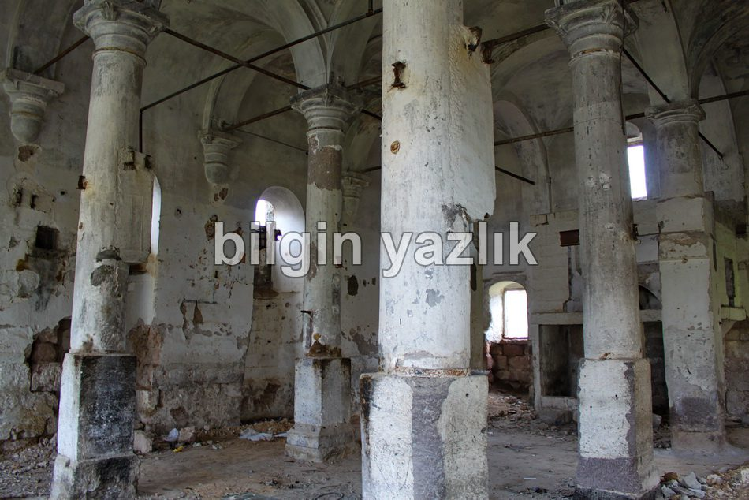
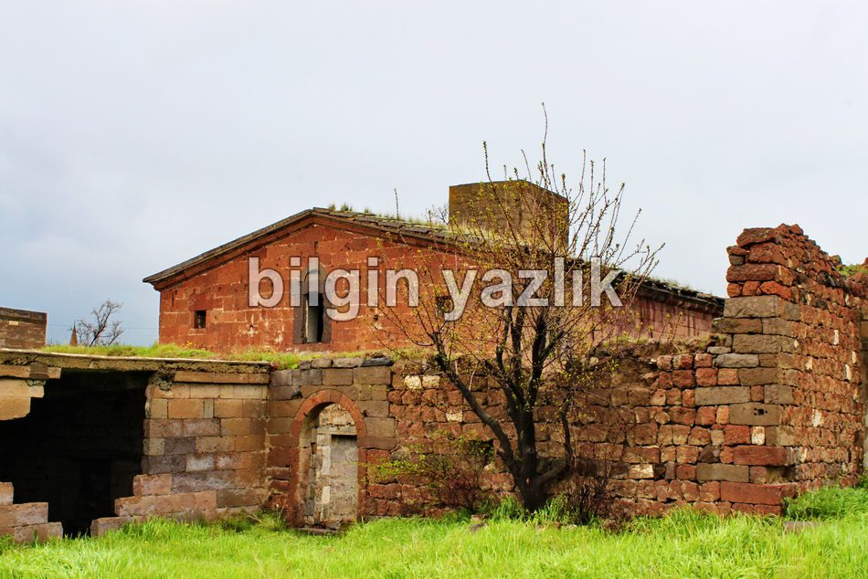
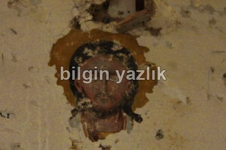
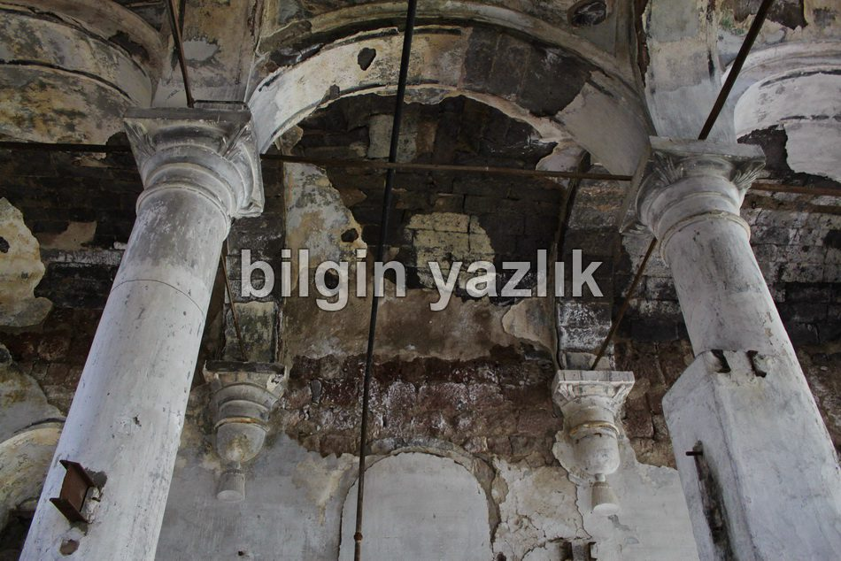
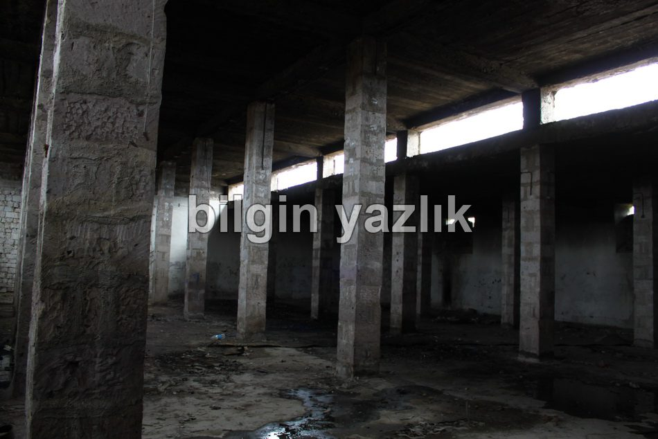
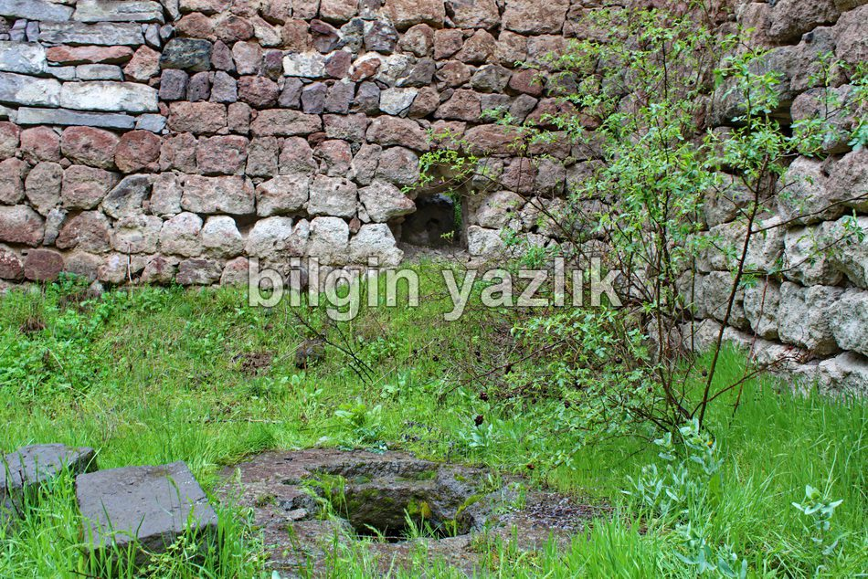
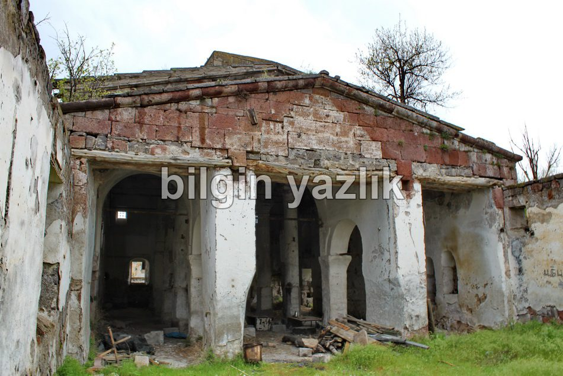
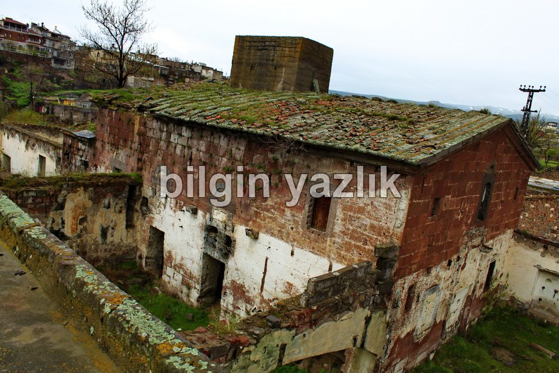
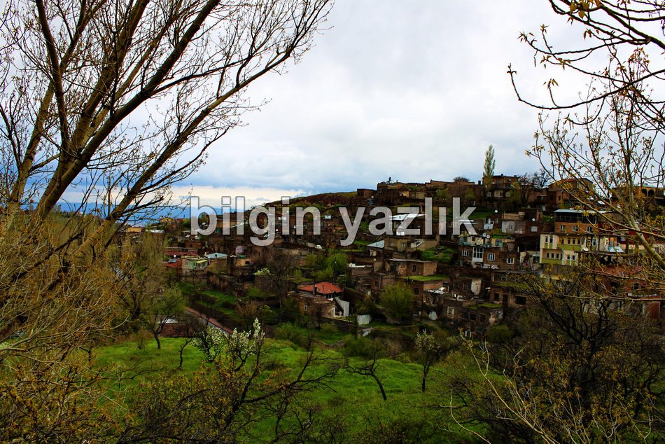
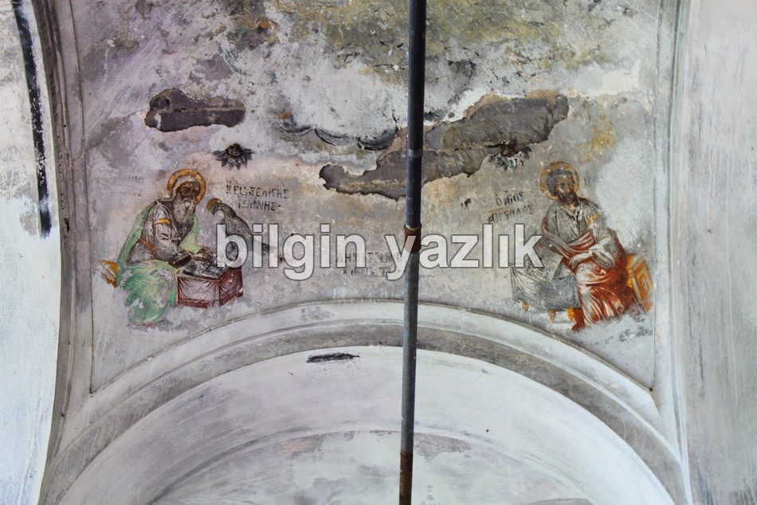
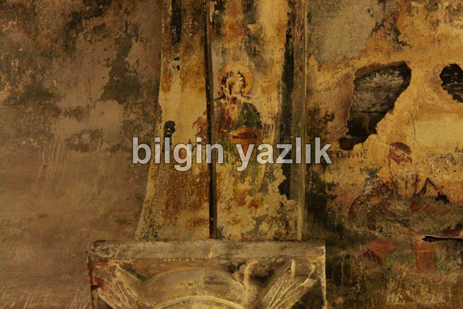
Bu yazı taliyol arşivinden taşınmıştır. · özgün kayıt